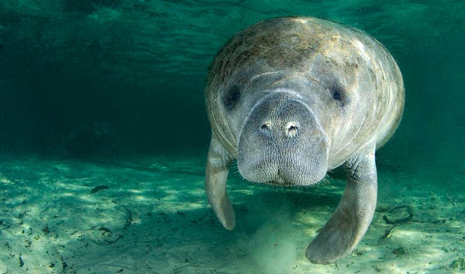

Using well known population of manatees along the east coast of Mexico, the project will be looking at the variation in foraging behaviour with reproductive status in manatees using a spatial ecology approach based on aerial imaging. Data collection will be done from the shore using aerial imaging from a small UAV (unmanned aerial vehicle).
The project will be supervised by Julien Martin (uOttawa, Canada). The project will be done in collaboration with Guillaume Rieucau (LUMCON, USA) and Nataly Castelblanco-Martínez (FINS). The student will be based at the Biology department of the University of Ottawa and will participate to field work in Mexico during the summer.
Available for 2 years. The student is expected to complete a minimum of two teaching assistantship per year.
Ideally September 2021 or January 2022
The ideal candidate should have:
Students that are interested should send by email to Julien Martin (julien.martin@uottawa.ca):